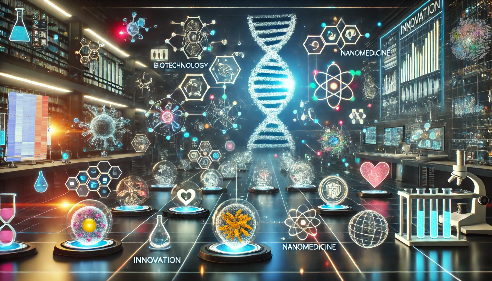

Aprende ciencia jugando — desde moléculas hasta nanomedicina
Experiencias interactivas diseñadas para explorar la biología molecular, la bioquímica, la nanotecnología y la genética del cáncer. Elige tu nivel y descubre cómo funciona la ciencia que está cambiando la medicina.
